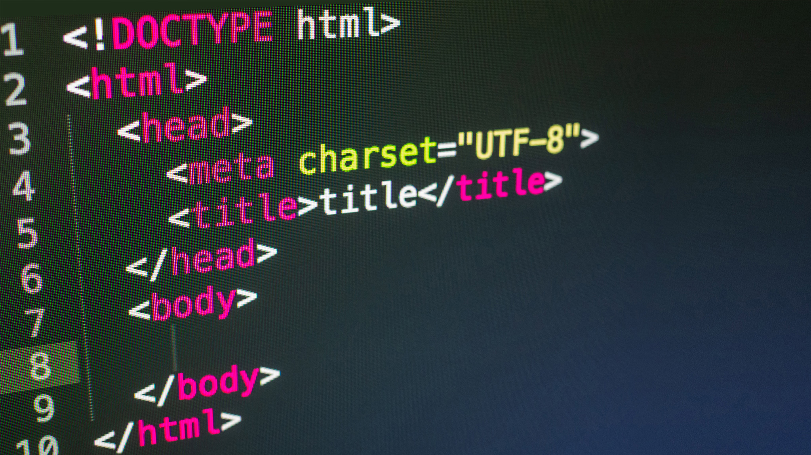

Herzlich Willkommen zu meinem Vortrag!
HTML
Dieser Vortrag wurde mit HTML gemacht.(HyperText Markup Language).
Normalerweise wird es benutzt, um Webseiten zu machen,
doch ich habe eine Mischung aus einer Informationswebseite und einem Vortrag gemacht.
In HTML schreibt man mit abgekürzter Programmiersprache,
z.B. heißt (<p>) paragraph und steht für einen Absatz, wie es aus dem Englischen kommt.

CSS
Es gibt nicht nur HTML sondern auch CSS (Cascading Style Sheets),
Es ist nichts anderes als das
Designen von einer Webseite.
es wird dazu benutzt um Farben Schriftarten, ect. zu verändern um die Webseite
besser aussehen zu
lassen.
Z.B bedeutet der Code (background-color: #f1f1f1f1;)
dass die Hintergrundfarbe auf ein helles Grau umgestellt wird